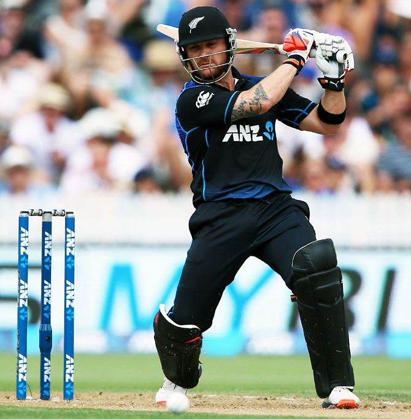

Brendon McCullum
Brendon Barrie McCullum ONZM (born 27 September 1981) is a former New Zealand cricketer and the current head coach of the England Cricket Test team. Representing New Zealand, he played all formats, including as captain. McCullum was renowned for his quick scoring, notably recording the fastest test century of all time. He is considered one of the most successful batsmen and captains of New Zealand cricket. As captain, he led New Zealand to the finals of the 2015 Cricket World Cup, where they lost to Australia by 7 wickets. He retired from all forms of cricket in August 2019.